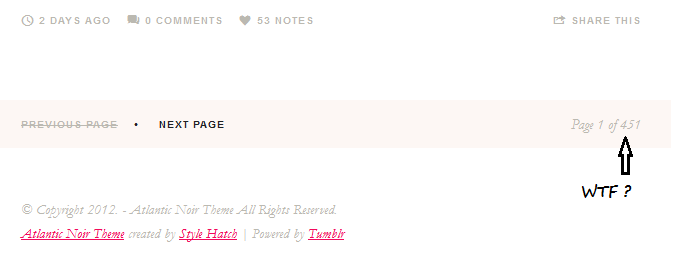

< < < Back
Thin Privilege Doesn’t Exist – Return Of Kings

Females love to rationalize. Fat females love to rationalize even more. Sometimes, we get a rationalization so big it must be called out. Today is one of those times.
This is thin privilege.
Seriously…this is a real website.
The Definition Of Privilege
Let’s first define what exactly constitutes a privilege. And to show how moronic this website is, let’s even use the definition of privilege they point to themselves:
Privilege is any right, immunity, or benefit enjoyed only by a person or group beyond the advantages of most. At TJLP, we think of privilege as an unearned advantage that a dominant group has over marginalized groups…A key aspect of privilege is that, due to its unearned nature, those who have privilege often do not realize they have it. In other words, they don’t see the access and opportunity being a member of a dominant group affords them.
(Emphasis in original)
For example, under this definition being born white is a privilege. It is “unearned” in that you have no control over it. Again, only under this definition, being either male or female can be considered a privilege because again, you do not earn this designation. You are born this way.
Thin Privilege Doesn’t Exist
Being thin is not an unearned state. How do I know? Well, besides the obvious fact that one can exercise and eat right and magically morph from being fat to thin, I have personally gone through this. During my early years in college, I was 198 pounds and 6’0. My max bench was 45 lbs. So that should tell you the body type I had…zero muscle, all fat. I never exercised. I would eat pound-sized burritos with nachos and then gorge on multiple cookies after smoking some weed. I was a chubster to say the least.
What was the result? I never got laid. I had less respect from my friends and rightfully so. I still had a lot of friends and had a lot of fun because I was in college, but it ended there. I was not happy and decided I needed to make a change, so instead of writing a blog about why it’s ok to be fat, I actually did something. I stopped eating like a pig. My diet consisted of egg whites, grapefruits, chicken breast and veggies. I would not eat after 6pm. And no matter what, no matter how hungover I was from the night before, I would run 4 miles every morning. What happened was I went from 198 to 154 in three months.
Whether that’s the best means to lose weight or not — who knows? But guess what: I wasn’t fat anymore. People were complimenting me left and right. I snagged my first girlfriend. I was actually hooking up with girls instead of just staring at them. I was able to move around the basketball court instead of just posting up and backing down my opponents. All these benefits that were now conferred on me were earned. All my hard work, self-control and dedication paid off.
Nor am I on the only one. Numerous people I’ve personally known have done the same thing. Hard work, exercise, and diet, and somehow their bodies decrease in size. Ever wonder why in America hot girls drive Range Rovers and fat girls have jobs? It’s because the men that buy said Range Rovers have options, and would never take up a fatty. The hot girls, on the other hand, are going to yoga, pilates, boot camp, the gym; they are the ones eating kale at Whole Foods for every meal. Again, they work for their bodies and the associated “privileges” that come with it. Go outside the Western world and you will find many svelte women. Why? Because they barely eat and walk 5 miles a day (in heels at that). Again, effort and a concentrated desire to not get fat yields these results. Therefore because these are earned rights, by the very definition used in this poor excuse of a blog, thin privilege doesn’t exist.
It’s All An Excuse
Some of my closest family members are overweight. And while I love them, I don’t sympathize with them. I’ve seen the way they eat and there is no effort whatsoever to change. They keep hoping that it will just go away. They keep citing the latest craze relying on a magical shortcut to just develop. But it never will. They know deep down in their hearts what it takes but rather rely on excuses, supposed genetics, or society like these blubber bloggers do.
Perhaps, just maybe if the authors of this blog spent a little more time in the gym instead of spending all their free time constructing 451 pages of babble, they’d earn some of that coveted thin privilege…

Read Next: Open Letter To Fat Girls


{kind=link}